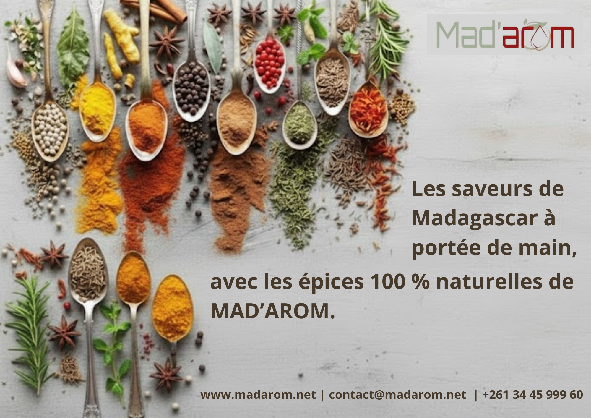

Contexte et Objectifs
Ce projet est la preuve directe de ma capacité à adapter mon travail à un contexte purement commercial et orienté vers la vente. L'objectif était de créer des visuels pour les réseaux sociaux qui attirent l'attention des clients, éduquent sur les produits et stimulent l'achat, en gérant deux gammes de produits distinctes (luxe/bien-être et alimentaire).
Ceci est la démonstration de ma compréhension des mécanismes d'attraction client par le contenu.
1. L'Adaptation au Marché Commercial Bipolaire
J'ai dû concevoir deux approches visuelles distinctes pour la même marque :
- Gamme Huiles Essentielles : Design élégant, basé sur la sérénité et le luxe (attrait émotionnel).
- Gamme Épices : Design coloré, basé sur la gourmandise, la qualité alimentaire et les recettes (attrait pratique).
a. Stratégie de Marque Visuelle (Canva)
J'ai ajusté le style pour correspondre au branding du client en utilisant :
→ Des palettes de couleurs naturelles pour l'huile essentielle.
→ Des palettes plus vives et saturées pour les épices.
L'objectif était de positionner la marque comme une référence de confiance et de bien-être dans ses deux catégories.
2. Conception de Visuels Optimisés pour la Conversion
Mon travail se concentre sur l'efficacité du contenu, en concevant des publications qui ne sont pas seulement belles, mais qui génèrent de l'action.
a. Les Types de Contenu Créés
- Contenu Éducatif (Épices) : Visuels de recettes rapides ou d'astuces d'utilisation pour augmenter l'engagement.
- Contenu Émotionnel (Huiles) : Présentation soignée des produits avec un appel à l'action clair orienté vers la détente (inciter à la vente).
- Preuve Sociale : Mise en forme graphique des témoignages pour inspirer confiance.



Sélection de publications créées sur Canva. Ces visuels démontrent la capacité à produire un contenu de marque adapté à la fois au secteur du bien-être et au secteur alimentaire.
3. Conclusion : Un Design qui Vend et Attire.
- Maîtrise de Canva : Permet la production rapide de contenu brandé et de haute qualité.
- Design Axé sur l'Objectif : Chaque visuel est pensé pour déclencher une action spécifique (achat, engagement, clic) plutôt que d'être purement décoratif.
- Polyvalence Commerciale : Capacité à créer des designs efficaces pour différentes gammes de produits (bien-être vs. alimentaire), prouvant que je peux m'adapter à toutes les niches.